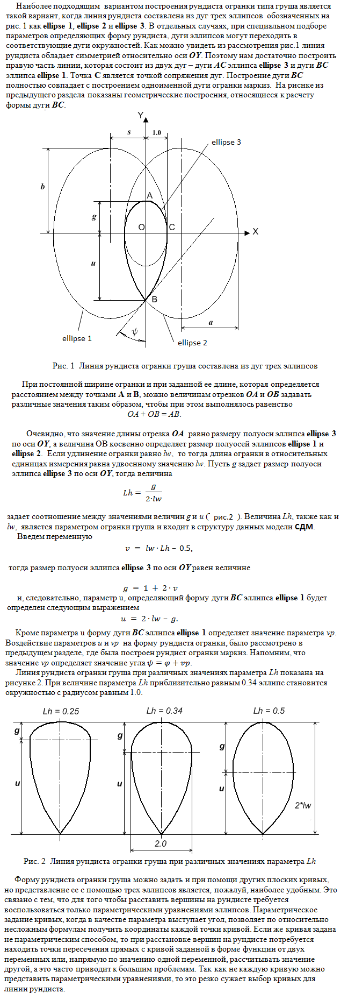

Направляющей линией для цилиндра рундиста является комбинация из трех дуг эллипсов. Программа в работе показана ниже.

function init_girdle()
{
// Параметр vp обозначен как δ на экране при запуске программы.
// При расчете формы рундиста и получении формул используемых
// для этого расчета (полуоси эллипса a и b) использовалось свйство касательной к эллипсу.
// Подробно это рассмотрено в комментариях к программе MarquiseGirdle.html
// g - длина отрезка расположенного между вершиной 0 рундиста огранки и точкой O.
// u - длина отрезка OB
// ширина рундиста принята равной 2
// g + u = 2*lw
// Lh = g / 2*lw
// Lh задает соотношение величин g и u.
var i;
// Введем переменную v
v = lw * Lh - 0.5;
// тогда размер полуоси эллипса ellipse_3 по оси OY равен величине
g = 1.0 + v + v;
if ( g < 0 )
return null;
u = 2*lw - g; // u - длина отрезка OB (на экране при запуске программы)
if ( u < 0 )
return null;
fi = Math.asin ( ( u + u ) / ( u * u + 1.0) );
psi = fi + vp; // vp (на экране это угол δ) - определяет величину отличия формы эллипса от окружности
t = u * Math.tan(psi); // на экране это длина отрезка OM
if ( vp >= Math.PI/2 )
return null;
if ( t <= 2.0)
return null;
// a и b - полуоси эллипса (на экране a < b по модулю)
a = ( t - 1.0 ) / ( t - 2.0 );
s = a - 1.0;
b = u * ( 1.0 - t ) / Math.sqrt ( t * t - ( t + t ) );
// Расстановка вершин на линии рундиста.
// Переменные AA, BB и CC определяют уравнение AA*xx + BB*y + CC = 0
var AA, BB, CC;
var angle_current;
var rez = [2];
var delta, x, y, w, x_rez, y_rez;
var bRez;
if (DelAngGd_16 <= 0.0)
{
// Сдвиг центральной точки рундиста в сторону
// противоположную от носика груши.
var ang_0_16 = M_PI_2 + DelAngGd_16;
var E = new Point2D(Math.sin(ang_0_16), Math.cos(ang_0_16));
var alpha = Math.atan2(E[1], (E[0] + s));
// Вершины в квадранте (X > 0; Y > 0)
var ang_0_8 = ang_0_16 / 2 + DelAngGirdle_8;
var ang_8_16 = ang_0_16 - ang_0_8;
var ang_0_4 = ang_0_8 / 2 + DelAngGirdle_4;
var ang_4_8 = ang_0_8 - ang_0_4;
var ang_8_12 = ang_8_16 / 2 + DelAngGirdle_12;
var ang_12_16 = ang_8_16 - ang_8_12;
angle_current = 0.0;
for ( i = 0; i <= 16; i++ )
{
x = Math.sin(angle_current);
y = Math.cos (angle_current);
girdle[i] = new Point2D(x, y * g);
if (i < 4)
delta = ang_0_4 / 4;
else if (i < 8)
delta = ang_4_8 / 4;
else if (i < 12)
delta = ang_8_12 / 4;
else
delta = ang_12_16 / 4;
angle_current = angle_current + delta;
}
var v16_1_x = girdle[16][0];
var v16_1_y = girdle[16][1];
// Вершины в квадранте (X > 0; Y < 0)
var ang_32 = Math.acos(s / a);
var ang_16 = - alpha;
var ang_24 = ang_32 - (ang_32 - ang_16 )/ 2.0 + DelAngGirdle_24;
var ang_20 = ang_24 - (ang_24 - ang_16) / 2.0 + DelAngGirdle_20;
var ang_28 = ang_32 - (ang_32 - ang_24) / 2.0 + DelAngGirdle_28;
var j = 31;
angle_current = ang_32;
for ( i = 15; i >= 0; i-- )
{
if (i < 4)
delta = (ang_20 - ang_16) / 4.0;
else if ( (i >= 4) && (i < 8) )
delta = (ang_24 - ang_20) / 4.0;
else if ( (i >= 8) && (i < 12) )
delta = (ang_28 - ang_24) / 4.0;
else
delta = (ang_32 - ang_28) / 4.0;
angle_current = angle_current - delta;
if (angle_current <= 0)
{
// x и y - координаты точки L
x = a * Math.cos(angle_current) - s;
y = b * Math.sin(angle_current);
// k - угловой коэффициент прямой DL
var k = y/(x+s);
// Находим координаты точки K,
// лежащей на пересечении прямой DL с Ellipse_1
AA = g*g + k*k;
BB = 2*k*k*s;
CC = s*s*k*k - g*g;
var x_rez, x_rez; // координаты точки K
if(!QuadraticEquation(AA, BB, CC, rez))
{
return null;
}
if (rez[0] > rez[1])
x_rez = rez[0];
else
x_rez = rez[1];
y_rez = (x_rez + s)*k;
girdle[j] = new Point2D(x_rez, y_rez);
j--;
}
else
{
girdle[j] = new Point2D();
girdle[j][0] = a * Math.cos(angle_current) - s;
girdle[j][1] = b * Math.sin(angle_current);
j--;
}
}
girdle[16] = new Point2D(v16_1_x, v16_1_y);
}
else
{
// DelAngGd_16 > 0.0
// Сдвиг центральной точки рундиста в сторону носика груши.
// Определяем координаты точки N (g16)
var N = new Point2D(a * Math.cos(DelAngGd_16) - s, b * Math.sin(DelAngGd_16));
// Находим точку M пересечения прямой ON с Ellipse_1
var k = N[1]/N[0];
var beta = Math.atan2(-N[1], N[0]);
var ang_0_16 = M_PI/2 + beta;
// Вершины g0 - g16
var ang_0 = 0.0;
var ang_8 = ang_0_16 / 2.0 + DelAngGirdle_8;
var ang_4 = ang_0 + (ang_8 - ang_0) / 2.0 + DelAngGirdle_4;
var ang_12 = ang_8 + (ang_0_16 - ang_8) / 2.0 + DelAngGirdle_12;
var ang_16 = ang_0_16;
angle_current = 0.0;
for ( i = 0; i <= 15; i++ )
{
if (i <= 4)
delta = (ang_4 - ang_0) / 4.0;
else if ( (i >= 5) && (i <= 8) )
delta = (ang_8 - ang_4) / 4.0;
else if ( (i >= 9) && (i <= 12) )
delta = (ang_12 - ang_8) / 4.0;
else
delta = (ang_16 - ang_12) / 4.0;
// Это могут быть и координаты точки R
// если окжется, что angle_current > M_PI_2
var x = Math.sin(angle_current);
var y = g*Math.cos(angle_current);
if (angle_current > M_PI_2)
{
// Находим точку P пересечения
// прямой OR с Ellipse_2
k = y / x;
AA = b*b + a*a*k*k;
BB = 2*b*b*s;
CC = b*b*s*s - a*a*b*b;
var x_rez, y_rez;
if(!QuadraticEquation(AA, BB, CC, rez))
{
return null;
}
if (rez[0] > rez[1])
x_rez = rez[0];
else
x_rez = rez[1];
y_rez = k * x_rez;
girdle[i] = new Point2D(x_rez, y_rez);
}
else
{
var w = Math.pow (Math.abs(x), 2) + Math.pow (Math.abs(y), 2);
w = 1.0 / Math.pow(w, 1.0 / 2);
girdle[i] = new Point2D(w * x, w * y * g); // ?? что лучше
//girdle[i] = new Point2D(x, y * g); // ?? что лучше
}
angle_current = angle_current + delta;
}
// Вершины g16 - g32
var ang_32 = Math.acos(s / a);
ang_16 = DelAngGd_16;
var ang_24 = ang_32 - (ang_32 - ang_16 )/ 2.0 + DelAngGirdle_24;
var ang_20 = ang_24 - (ang_24 - ang_16) / 2.0 + DelAngGirdle_20;
var ang_28 = ang_32 - (ang_32 - ang_24) / 2.0 + DelAngGirdle_28;
var j = 31;
angle_current = Math.acos(s / a);
for ( i = 16; i > 0; i-- )
{
if (i <= 4)
delta = (ang_20 - ang_16) / 4.0;
else if ( (i > 4) && (i <= 8) )
delta = (ang_24 - ang_20) / 4.0;
else if ( (i > 8) && (i <= 12) )
delta = (ang_28 - ang_24) / 4.0;
else
delta = (ang_32 - ang_28) / 4.0;
angle_current = angle_current - delta;
girdle[j] = new Point2D();
girdle[j][0] = a * Math.cos(angle_current) - s;
girdle[j][1] = b * Math.sin(angle_current);
j--;
}
var uuu = 10;
}
// Остальные вершины
girdle[32] = new Point2D(0.0, -u);
for ( i = 1; i < 32; ++ i )
{
girdle[i+32] = new Point2D(- girdle[32-i][0], girdle[32-i][1]);
}
// Если не требуется настраивать размер сегментов рундиста, то тогда
// линия рундиста в квадранте (X > 0; Y > 0) просто делится на 16 равных частей.
// Линия рундиста в квадранте (X > 0; Y < 0) также делится также на 16 равных частей.
/*
var angle_current;
var x, y, w;
var bRez;
var delta = Math.PI/32;
// Вершины в квадранте (X > 0; Y > 0)
angle_current = 0.0;
for ( i = 0; i <= 16; i++ )
{
x = Math.sin(angle_current);
y = Math.cos (angle_current);
girdle[i] = new Point2D( x, y * g);
angle_current = angle_current + delta;
}
// Вершины в квадранте (X > 0; Y < 0)
var ang_32 = Math.acos (s / a);
angle_current = 0;
delta = ang_32/16;
for ( i = 1; i < 17; i++)
{
angle_current = angle_current + delta;
girdle[i+16] = new Point2D(a * Math.cos(angle_current) - s, b * Math.sin(angle_current));
}
girdle[32][0] = 0;
girdle[32][1] = -u;
for (i = 1; i < 32; i++)
{
girdle[32 + i] = new Point2D( -girdle[32 - i][0], girdle[32 - i][1] );
}
*/
}